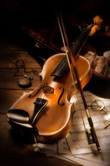
Elegante y expresivo. Excelente para música clásica.
Q 1,800.00 Solicitar Info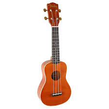
Compacto y alegre. Fácil de aprender y transportar.
Q 350.00 Solicitar Info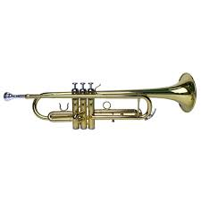
Brillante y fuerte. Ideal para música latina y clásica.
Q 2,550.00 Solicitar Info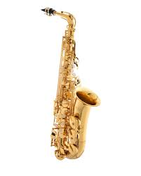
Sonido suave y potente. Perfecto para jazz y bandas.
Q 750.00 Solicitar Info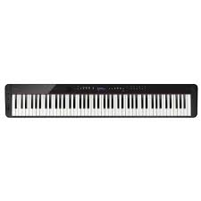
Teclas sensibles y sonido realista. Perfecto para casa o estudio.
Q 8,999.00 Solicitar Info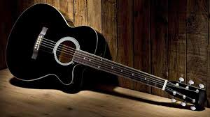
Sonido cálido y versátil. Ideal para principiantes y profesionales.
Q 999.00 Solicitar Info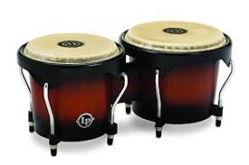
Pequeños y rítmicos. Perfectos para música latina.
Q 799.00 Solicitar Info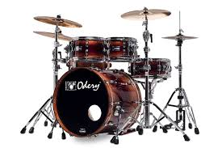
Potente y completa. Ideal para ritmo y energía en vivo.
Q 8,000.00 Solicitar Info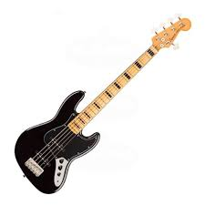
Sonido profundo y potente, esencial para marcar el ritmo.
Q 2,400.00 Solicitar Info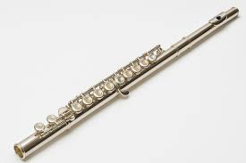
Instrumento de viento con un sonido dulce y brillante.
Q 1,200.00 Solicitar Info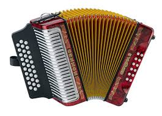
Versátil y expresivo, perfecto para música tradicional.
Q 4,000.00 Solicitar Info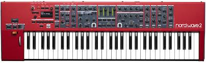
Ofrece una enorme variedad de sonidos electrónicos y efectos.
Q 3,500.00 Solicitar Info